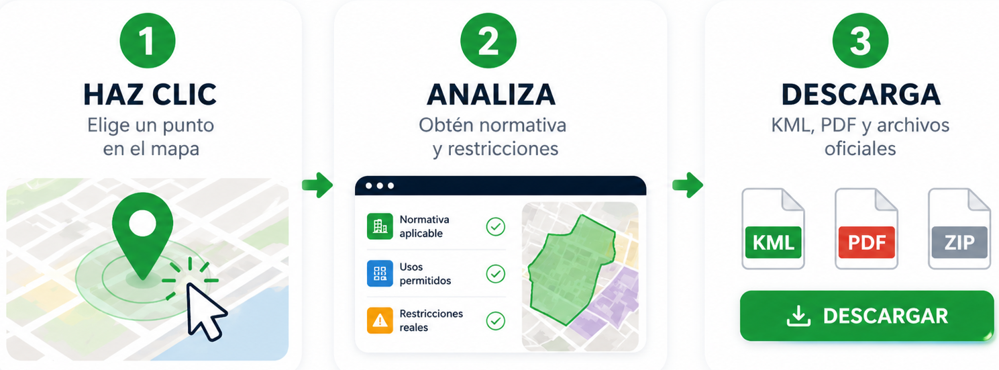

Haz clic en el mapa para abrir el CARD PRO del punto consultado.
Planificación Territorial en Chile
Normativa urbana, PRC y usos permitidos
Haz clic en el mapa para abrir el CARD PRO del punto consultado.
Haz clic en cualquier punto del mapa y descubre al instante la normativa urbana aplicable, usos permitidos y restricciones reales.
Accede a más de 250 Planes Reguladores, explora su alcance y descarga los archivos oficiales en KML.
Convierte cualquier ubicación en una decisión informada.
